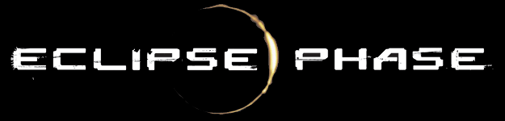
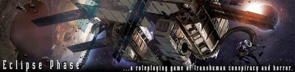

 
Your mind is software. Program it.
Your body is a shell. Change it.
Death is a disease. Cure it.
Extinction is approaching. Fight it.
Core Rules
Sunward
-
Original Concept and Design
-
Rob Boyle, Brian Cross
-
Writing and Design
-
Lars Blumenstein, Rob Boyle, Brian Cross, Jack Graham, John Snead
-
Additional Writing
-
Bruce Baugh, Randall N. Bills, Davidson Cole, Tobias Wolter
-
Editing
-
Rob Boyle, Jason Hardy
-
Development
-
Rob Boyle
-
Line Developer
-
Rob Boyle
-
Art Direction
-
Randall N. Bills, Rob Boyle, Brent Evans, Mike Vaillancourt
-
Cover Art
-
Stephan Martiniere
-
Interior Art
-
Justin Albers, Rich Anderson, Davi Blight, Leanne Buckley, Robin Chyo, Daniel Clarke, Paul Davies, Nathan Geppert, Zachary Graves, Tariq Hassan, Thomas Jung, Sergey Kondratovich, Sean McMurchy, Dug Nation, Ben Newman, Justin Oaksford, Efrem Palacios, Sacha-Mikhail Roberts, Silver Saaramael, Daniel Stultz, Viktor Titov, Alexandre Tuis, Bruno Werneck, and Dr. CM Wong (Opus Artz Studio)
-
Graphic Design and Layout
-
Adam Jury, Mike Vaillancourt
-
Faction Logos
-
Michaela Eaves, Jack Graham, Hal Mangold, Adam Jury
-
Indexing
-
Rita Tatum
-
Additional Advice and Input
-
Robert Derie, Adam Jury, Sally Kats, Christian Lonsing, Aaron Pavao, Andrew Peregrine, Kelly Ramsey, Malcolm Shepard, Marc Szodruch
-
Science Advice
-
Brian Graham, Matthew Hare, Ben Hyink, Mike Miller
-
Playtesting and Proofreading
-
Chris Adkins, Sean Beeb Laura Bienz, Echo Boyle, Berianne Bramman, Chuck Burhanna, C. Byrne, Nathaniel Dean, Joe Firrantello, Nik Gianozakos, Sven Gorny, Björn Grammatke, Aaron Grossman, Neil Hamre, Matthew Hare, Kristen Hartmann, Ken Horner, Dominique Immora, Stephen Jarjoura, Lorien Jasny, Jan-Hendrik Kalusche, Austin Karpola, Robert Kyle, Tony Lee, Heather Lozier, Jürgen Mayer, Darlene Morgan, Trey Palmer, Matt Phillips, Aaron Pollyea, Melissa Rapp, Jan Rüther, Björn Schmidt, Michael Schulz, Brandie Tarvin, Kevin Tyska, Liam Ward, Charles Wilson, Kevin Wortman, plus everyone who participated in a game at Gen Con 2008
-
Musical Inspiration
-
Geomatic (Blue Beam), Memmaker (How to Enlist in a Robot Uprising), Monstrum Sepsis (Movement)
Dedication This book is dedicated first and foremost to the people who made Eclipse Phase happen, from everyone who contributed time, sweat, ideas, and money into it to everyone who picks it up, reads it, and plays it. This game is by you and for you. Secondly it’s dedicated to my grandmother and to Andrea, both important people in my life who died while I was working on this book and its themes of defeating death. I sincerely hope that one day such tragic losses are avoided. Third, this book is dedicated to my son Echo, my entertaining working companion on this project. Finally this book is dedicated to those visionaries, especially the anarchists and transhumanists, who are working to bring about a fantastic future, starting now. —Rob Boyle
Our Resources
Outside Resources
First Printing by Catalyst Game Labs, an imprint of InMediaRes Productions, LLC PMB 202 - 303 - 91st Ave. NE, G-701 Lake Stevens, WA 98258. Printed in China
Creative Commons License; Some Rights Reserved.
This work is licensed under the Creative Commons Attribution- Noncommercial-Share Alike 3.0 Unported License.
To view a copy of this license, visit: http://creativecommons.org/licenses/by-nc-sa/3.0/ or send a letter to:
Creative Commons, 171 Second Street, Suite 300, San Francisco, California, 94105, USA.
(What this means is that you are free to copy, share, and remix the text and artwork within this book under the following conditions:
- you do so only for noncommercial purposes;
- you attribute Posthuman Studios;
- you license any derivatives under the same license.
For specific details, appropriate credits, and updates/changes to this license, please see: